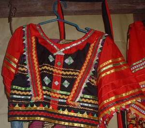

binelaran 
/binɔladan/
n.
Matigsalug woman dress
Seini ka kumbalè te malitan ne Matigsalug ne malasi igsaluub iling ke egpanubad, sahekeen wey duma pad ne me himuwen.
Binelaran ka amana natageyi te me Melikanu ne igkukumbalè te me Matigsalig.
Binelaran dressed was known by the American people which wore by the Matigsalug women.
Eng. Native dress; dress
Online dict status: -
Usage level: M
v.
for a woman (egbibinelaran, migbibinelaran/imbibinelaran, binelaran, actor, eg><ø-rdpCV-) to wear Matigsalug dress
Egbibinelaran ka egparid su sika ka suhù te Igdatu dan.
Matigsalug dressed of women was required by the leader to wear during parade.
Eng. wear
Online dict status: -
Usage level: M
Created: 19/May/2009
Updated by: QDL,RAA,QDL,RJH
Last updated: 07/Dec/2011
This page last updated: 19/May/2012
Copyright © 2009-2010, Matigsalug Language Christian Association, Inc